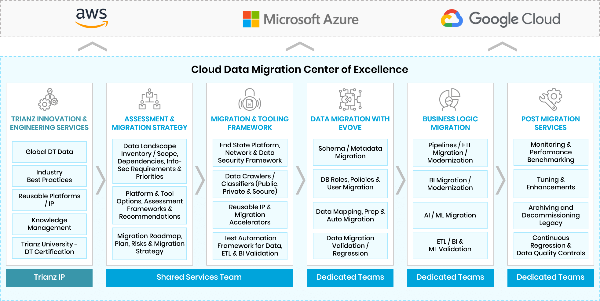

Scalable ecosystem data and the right decisions at all levels.
The increasingly digitalized world we live in results in the creation of more and more data. While most companies focus on collecting, integrating, and analyzing their enterprise data, the most innovative companies think about data in a much more holistic and broad sense.
In one dimension, the innovators think about all sources of data and include competition, regulators and influencers in their data universe. In a second dimension, they think about data that is generated outside of the walls of the enterprise - including that of customers, employees, partners and suppliers. Finally, they think about all forms of data: structured, unstructured, alphanumeric, text, sentiment, and emotions.
The insights of innovators who are thinking 'ecosystem data' are far more complete, current, and accurate. This, in turn, leads managers at all levels to make the right decisions.
The trouble is that traditional ERP, CRM, HRMS, service management or even custom applications are neither designed to capture such data, nor are they scalable in on-prem environments for running analytics.
Cloud solutions provide several advantages over local data warehouse appliance setups. The move from on-premise data warehousing into cloud or cloud data-lakes offers several benefits:
Ecosystem data can run into petabytes, and a significant drawback for on-premise data warehouses is limited computing capabilities, which are essential for large scale data. Every time an on-prem server reaches maximum capacity, companies must upgrade or add capacity, resulting in processing downtime.
Cloud platforms offer virtually infinite scalability via pooled computing resources. You can quickly provision more vCPU, RAM, or storage capacity when needed, and this allows for continuous analysis of very large volumes of data.
Modern cloud hosting platforms use resource-based billing models to minimize operating costs. This means that when you move to the cloud, you will only pay for the computing resources you use, saving money in the long-term. Depending on the platform you choose, you also have access to a range of storage options, including SSD, HDD, and tape-based storage drives, allowing you to minimize costs when storing infrequently accessed datasets.
Along with resource-based billing, cloud platforms also take away the burden of infrastructure maintenance, freeing up IT staff hours to work on development rather than repetitive infrastructure management tasks. This translates to indirect cost-savings, as human resources are utilized more efficiently when compared to an on-premise data warehousing approach.
On-premise data backups can be time-consuming and challenging to automate, especially with traditional data warehousing solutions. Monumental amounts of hard drive space are needed to facilitate backups in the first place, leading to increased hardware costs.
All major cloud platforms have built-in disaster recovery functionality, offering backup replication and scheduled backups that help you achieve recovery point objectives (RPOs) and recovery time objectives (RTOs). For older backups, you can transfer them to slower (read: often lower cost) archive storage solutions in the cloud, further reducing your disaster recovery operation costs. You can even leverage the power of third-party multi-cloud replication-as-a-service tools to increase network resiliency further.
NGTIQ is accomplished at guiding clients further through the process to help them make the best choice for your organization.
One level of data migration is to take finite datasets such as customer, products, sales, finance etc. and move it to a cloud lake. In this, NGTIQ has developed a platform called EVOVE, powered by CompilerWorks, which reduces or eliminates the challenge of designing, building and testing the extract, test, and load (ETL) logic by automating key components of the platform migration process. Therefore, we are able to reduce migration cycle times by 30% or more. Here are the steps in our cloud data migration methodology:
Rebuild semantic Layer and migrate your business logic to LookML syntax.
Migrate your reports to Looker in partnership with your teams.
The database structure, ETL jobs, and stored procedures are analyzed so that detailed requirements can be created for the stages that follow.
EVOVE automatically converts 95% of the database elements to the modern architecture. The remaining database elements are then manually addressed.
This phase includes identifying and resolving any migration related issues in the database.
Migrating data at scale involves a very different approach in which we partner with clients. Beginning with strategy and prioritization, NGTIQ deploys a scalable team equipped with repetitive frameworks, IP, and accelerators to drive simultaneous migration of multiple datasets.
After a 4-6-week strategy phase, we operationalize data migration CoEs within another six weeks so that the CoE is fully operational within 2-3 months of commencing an engagement.

Cloud computing has revolutionized the way enterprises derive value from data. The elasticity of cloud technology solves workload challenges quickly and efficiently, from anywhere, and through any device.


Mr. Ajij Sarkar
Managing Director
NGT-IQ
What sets NGTIQ apart is that almost every phase of data migration at scale is conducted using IP and automation to drive efficiency, cost reduction, and faster time-to-market. We carry a wide array of IP to pick and choose from.
As a specialized digital transformation services firm, we have built close partnerships with all the major players in cloud and data technologies. Our teams are trained, certified and have access to all types of assets made exclusively available to premier partners.

Big Data & Anlytics Service

Advanced Analytics Services

Rated as most reliable partner for COVID-proof IT Operations

We rated #1 by our clients

Data Management Consulting Firm

Providing best AI experience